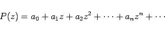

Inhalt Index DeskTop Bronstein

 Funktionentheorie Potenzreihenentwicklung analytischer Funktionen Konvergenz von Reihen mit komplexen Gliedern Potenzreihen im Komplexen
Funktionentheorie Potenzreihenentwicklung analytischer Funktionen Konvergenz von Reihen mit komplexen Gliedern Potenzreihen im Komplexen


Eine Potenzreihe im Komplexen hat die Gestalt
| (14.46a) |
wobei z0 ein fester Punkt der Zahlenebene ist und die Koeffizienten reelle oder komplexe Konstanten sind. Für z0 = 0 geht die Potenzreihe in die Form
|  | (14.46b) |
über. Konvergiert die Potenzreihe P(z - z0) für einen Wert  , dann konvergiert sie absolut und gleichmäßig für alle Punkte z jedes abgeschlossenen Kreises innerhalb des Kreises um z0 mit dem Radius .
, dann konvergiert sie absolut und gleichmäßig für alle Punkte z jedes abgeschlossenen Kreises innerhalb des Kreises um z0 mit dem Radius .